СП 356.1325800.2017 «Конструкции каркасные железобетонные сборные многоэтажных з»
О документе: разработчики, утверждение, регистрация, ключевые слова
СВОД ПРАВИЛ
СП 356.1325800.2017
Издание официальное
Москва 2017
1 ИСПОЛНИТЕЛЬ - Акционерное общество «Центральный научноисследовательский и проектно-экспериментальный институт промышленных зданий и сооружений» (АО «ЦНИИПромзданий»)
- 2 ВНЕСЕН Техническим комитетом по стандартизации ТК 465 «Строительство»
- 3 ПОДГОТОВЛЕН к утверждению Департаментом градостроительной деятельности и архитектуры Министерства строительства и жилищнокоммунального хозяйства Российской Федерации (Минстрой России)
- 4 УТВЕРЖДЕН приказом Министерства строительства и жилищнокоммунального хозяйства Российской Федерации от 13 декабря 2017 г. № 1661/пр и введен в действие с 14 июня 2018 г.
- 5 ЗАРЕГИСТРИРОВАН Федеральным агентством по техническому регулированию и метрологии (Росстандарт)
- 6 ВВЕДЕН ВПЕРВЫЕ
В случае пересмотра (замены) или отмены настоящего свода правил соответствующее уведомление будет опубликовано в установленном порядке. Соответствующая информация, уведомление и тексты размещаются также в информационной системе общего пользования - на официальном сайте разработчика (Минстрой России) в сети Интернет
© Минстрой России, 2017
Настоящий нормативный документ не может быть полностью или частично воспроизведен, тиражирован и распространен в качестве официального издания без разрешения Министерства строительства и жилищно-коммунального хозяйства Российской Федерации (Минстрой России)
Дата введения 2018-06-14
УДК
ОКС 91.080.40
Ключевые слова: железобетонные конструкции, каркасные многоэтажные здания, конструктивная схема, габаритная схема, рамный и связевый каркас, фундаменты, колонны, ригели, плиты перекрытий и покрытий, связевые панели, диафрагмы жесткости, ядра жесткости, стеновые панели
Генеральный директор
АО «НИЦ «Строительство»
\_\_\_\_\_\_\_\_\_\_\_\_
А.В. Кузьмин
Руководитель организации-разработчика
АО «ЦНИИПромзданий»
Генеральный директор, д-р техн. наук,
проф.
\_\_\_\_\_\_\_\_\_\_\_\_
В.В. Гранев
Руководитель
разработки
Начальник отдела ОКС №
1, д-р техн. наук, проф.
\_\_\_\_\_\_\_\_\_\_\_\_
Н.Н. Трекин
Исполнители:
Главный научный
сотрудник
д-р техн. наук, проф.
\_\_\_\_\_\_\_\_\_\_\_\_
Э.Н.Кодыш
Инженер
\_\_\_\_\_\_\_\_\_\_\_\_
И.А. Терехов
Введение
Настоящий свод правил разработан в соответствии с Федеральным законом от 30 декабря 2009 г. № 384-ФЗ «Технический регламент о безопасности зданий и сооружений» и Федеральным законом от 27 декабря 2002 г. № 184-ФЗ «О техническом регулировании» и содержит требования по расчету и конструированию несущих конструкций каркасных железобетонных сборных многоэтажных зданий.
Свод правил разработан авторским коллективом АО «ЦНИИПромзданий» (д-р техн. наук В.В. Гранев , д-р техн. наук Э.Н. Кодыш , д-р техн. наук Н.Н. Трекин , канд. техн. наук Н.Г. Келасьев , инженеры И.К. Никитин , И.А. Терехов ).
Правила проектирования
Prefabricated reinforced concrete frame constructions multi-storey buildings. Rules of design
1Область применения
2Нормативные ссылки
В настоящем своде правил использованы нормативные ссылки на следующие документы:
ГОСТ 12.1.012-2004 Система стандартов безопасности труда. Вибрационная безопасность. Общие требования
ГОСТ 5781-82 Сталь горячекатаная для армирования железобетонных конструкций. Технические условия
ГОСТ 6727-80 Проволока из низкоуглеродистой стали холоднотянутая для армирования железобетонных конструкций. Технические условия
ГОСТ 7348-81 Проволока из углеродистой стали для армирования предварительно напряженных железобетонных конструкций. Технические условия
ГОСТ 8829-94 Изделия строительные железобетонные и бетонные заводского изготовления. Методы испытаний нагружением. Правила оценки прочности, жесткости и трещиностойкости
ГОСТ 10884-94 Сталь арматурная термомеханически упрочненная для железобетонных конструкций. Технические условия
ГОСТ 10922-2012 Арматурные и закладные изделия, их сварные, вязаные механические соединения для железобетонных конструкций. Общие технические условия
ГОСТ 11024-2012 Панели стеновые наружные бетонные и железобетонные для жилых и общественных зданий. Общие технические условия
ГОСТ 13015-2012 Изделия бетонные и железобетонные для строительства. Общие технические требования. Правила приемки, маркировки, транспортирования и хранения
ГОСТ 13840-68 Канаты стальные арматурные 1×7. Технические условия ГОСТ 18979-2014 Колонны железобетонные для многоэтажных зданий. Технические условия
ГОСТ 18980-2015 Ригели железобетонные для многоэтажных зданий. Технические условия
ГОСТ 21506-2013 Плиты перекрытий железобетонные ребристые высотой 300 мм для зданий и сооружений. Технические условия
ГОСТ 23009-2016 Конструкции и изделия бетонные и железобетонные сборные. Условные обозначения (марки)
ГОСТ 25820-2014 Бетоны легкие. Технические условия
ГОСТ 26633-2015 Бетоны тяжелые и мелкозернистые. Технические условия
ГОСТ 27215-2013 Плиты перекрытий железобетонные ребристые высотой 400 мм для промышленных зданий и сооружений. Технические условия
ГОСТ 27751-2014 Надежность строительных конструкций и оснований. Основные положения
ГОСТ 28042-2013 Плиты покрытий железобетонные для зданий и сооружений. Технические условия
ГОСТ 28984-2011 Модульная координация размеров в строительстве. Основные положения
ГОСТ 31310-2005 Панели становые трехслойные железобетонные с эффективным утеплителем. Общие технические условия
ГОСТ 32488-2013 Панели стеновые наружные железобетонные из керамзитобетона для жилых и общественных зданий. Технические условия
ГОСТ 32499-2013 Плиты перекрытий железобетонные многопустотные для зданий пролетом до 9 м стендового формования. Технические условия
ГОСТ Р 52085-2003 Опалубка. Общие технические условия
ГОСТ Р 52544-2006 Прокат арматурный свариваемый периодического профиля классов А500С и В500С для армирования железобетонных конструкций
СП 14.13330.2014 «СНиП II-7-81* Строительство в сейсмических районах» (с изменением № 1)
СП 15.13330.2012 «СНиП II-22-81* Каменные и армокаменные конструкции» (с изменениями № 1, № 2)
СП 16.13330.2017 «СНиП II-23-81* Стальные конструкции»
СП 20.13330.2016 «СНиП 2.01.07-85* Нагрузки и воздействия»
СП 22.13330.2016 «СНиП 2.02.01-83* Основания здания и сооружений»
СП 24.13330.2011 «СНиП 2.02.03-85 Свайные фундаменты» (с изменением № 1)
СП 27.13330.2017 «СНиП 2.03.04-84 Бетонные и железобетонные конструкции, предназначенные для работы в условиях воздействия повышенных и высоких температур»
СП 28.13330.2017 «СНиП 2.03.11-85 Защита строительных конструкций от коррозии»
СП 44.13330.2011 «СНиП 2.09.04-87 Административные и бытовые здания» (с изменением № 1)
СП 54.13330.2016 «СНиП 31-01-2003 Здания жилые многоквартирные»
СП 56.13330.2011 «СНиП 31-03-2001 Производственные здания» (с изменением № 1)
СП 63.13330.2012 «СНиП 52-01-2003 Бетонные и железобетонные конструкции. Основные положения» (с изменениями № 1, № 2, № 3)
СП 70.13330.2012 «СНиП 3.03.01-87 Несущие и ограждающие конструкции» (с изменениями № 1, № 3)
СП 118.13330.2012 «СНиП 31-06-2009 Общественные здания и сооружения» (с изменениями № 1, № 2)
Примечание - При пользовании настоящим сводом правил целесообразно проверить действие ссылочных документов в информационной системе общего пользования -на официальном сайте федерального органа исполнительной власти в сфере стандартизации в сети Интернет или по ежегодному информационному указателю «Национальные стандарты», который опубликован по состоянию на 1 января текущего года, и по выпускам ежемесячного информационного указателя «Национальные стандарты» за текущий год. Если заменен ссылочный документ, на который дана недатированная ссылка, то рекомендуется использовать действующую версию этого документа с учетом всех внесенных в данную версию изменений. Если заменен ссылочный документ, на который дана датированная ссылка, то рекомендуется использовать версию этого документа с указанным выше годом утверждения (принятия). Если после утверждения настоящего свода правил в ссылочный документ, на который дана датированная ссылка, внесено изменение, затрагивающее положение, на которое дана ссылка, то это положение рекомендуется применять без учета данного изменения. Если ссылочный документ отменен без замены, то положение, в котором дана ссылка на него, рекомендуется применять в части, не затрагивающей эту ссылку. Сведения о действии сводов правил целесообразно проверить в Федеральном информационном фонде стандартов.
3Термины и определения
В настоящем своде правил применены следующие термины с соответствующими определениями:
- 3.1диафрагма жесткости
- Плоский вертикальный несущий элемент консольного типа, предназначенный для обеспечения пространственной жесткости здания путем восприятия горизонтальных нагрузок и передачи усилий на фундамент.
- 3.2диск перекрытия
- Плоский составной несущий элемент оконтуренный планом здания, состоящий из ригелей и опертых на них плит перекрытия, предназначенный для восприятия вертикальных нагрузок и передачи их на колонны каркаса, горизонтальных нагрузок для передачи их диафрагмам жесткости и объединения всех вертикальных несущих элементов в единую пространственную систему.
- 3.3габаритная схема
- Графически изображаемые параметры объемнопланировочного решения здания.
- 3.4конструктивная система
- Совокупность взаимосвязанных несущих конструктивных элементов здания, обеспечивающих его прочность и устойчивость.
- 3.5конструктивная схема
- Схема взаимодействия несущих элементов здания, обеспечивающая требуемое распределение усилий в них для определения их несущей способности.
- 3.6основание сооружения
- Часть массива грунта, непосредственно воспринимающая нагрузку от сооружения.
- 3.7продольная (поперечная) рама
- Плоский элемент каркаса здания, состоящий из колонн, элементов жесткости и горизонтальных ригелей, применяемый для описания конструктивной схемы здания и выполнения приближенных расчетов.
- 3.8расчетная схема (модель)
- Модель конструктивной системы, с указанием геометрических и физических параметров, характера взаимодействия между ее элементами и применяемая для проведения расчетов с целью получения значений внутренних усилий и деформаций.
- 3.9ригель
- Линейный несущий строительный элемент, расположенный горизонтально или наклонно, соединяющий вертикальные элементы и служащий опорой для плит перекрытия и покрытия.
- 3.10связевая панель
- Конструкция, состоящая из двух колонн, соединенных металлическими (треугольными, портальными или крестовыми) связями, предназначенная для восприятия и передачи на фундамент горизонтальной нагрузки.
- 3.11температурный (деформационный) шов
- Шов разделяющий несущие конструкции здания на блоки и исключающий передачу на соседний блок температурных, влажностных, силовых и вынужденных деформаций.
- 3.12ядро жесткости
- Вертикальная конструкция, выполненная в виде лестничной клетки, лифтовой шахты или вертикального коммуникационного канала из кирпича, монолитного или сборного железобетона, обладающая пространственной жесткостью и совместно с диском перекрытия повышающая (обеспечивающая) устойчивость здания.
4Общие положения
- должны быть исключены возможности получения травм при нахождении в них людей в процессе проживания, передвижения, работы, пользования передвижными устройствами, технологическим и инженерным оборудованием, а также снижения динамических воздействий на строительные конструкции, технологические процессы и работающих, вызываемых виброактивным оборудованием или внешними источниками колебаний.
5Конструктивные решения многоэтажных каркасных зданий
5.1Система унификации габаритных схем
Рисунок 5.1 - Привязка конструкций к координационным осям здания
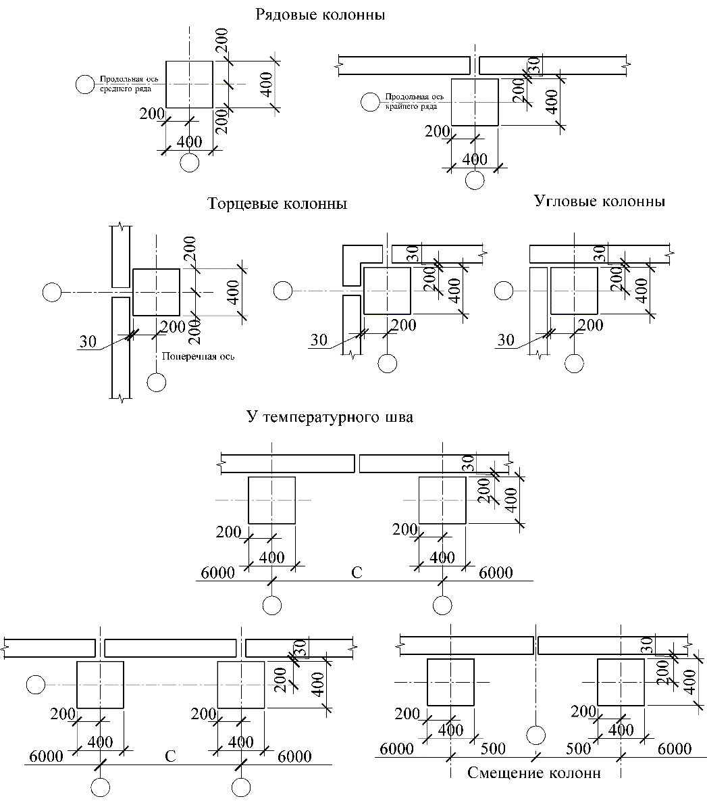
5.2Классификация конструктивных схем зданий
- связевые;
- рамно-связевые;
- рамные.
В таблице 5.2 приведены примеры расположения элементов жесткости в плане здания и их конструктивные решения.
Таблица 5.1 Расчетные схемы вертикальных рам каркаснобалочных (ригельных) зданий
Обозначения: 1 - колонна; 2 - перекрытие; 3 - шарнирный узел; 4 - жесткий узел.
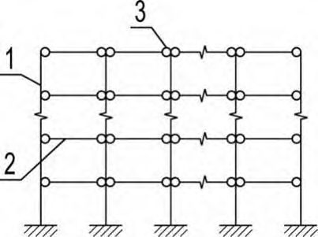
Таблица 5.2 Расположение элементов жесткости в плане здания и их конструктивные решения
5.3Связевые каркасы
В качестве вертикальных элементов жесткости следует использовать:
- диафрагмы жесткости (сплошные или с проемами) (рисунок 5.3):
- связевые панели с треугольной, портальной или крестовой решеткой (рисунок 5.4);
- ядра жесткости (рисунок 5.5).
а - сопряжение ригеля с колонной со скрытой прямоугольной консолью; б - сопряжение ригеля с колонной со скрытой консолью и верхней монтажной соединительной пластиной
Рисунок 5.2 - Конструкции сопряжений ригеля с колонной в связевом каркасе
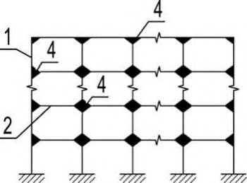
а - с полкой для опирания плит; б плоская
Рисунок 5.3 - Диафрагмы жесткости а треугольная решетка; б портальная решетка; в крестовая решетка
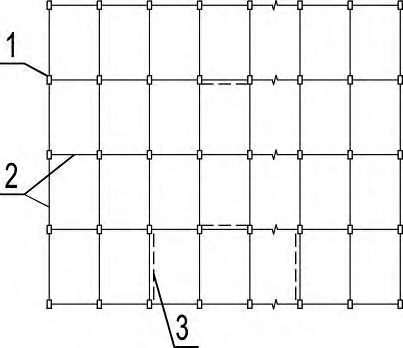
Рисунок 5.4 - Связевые панели с металлической решеткой
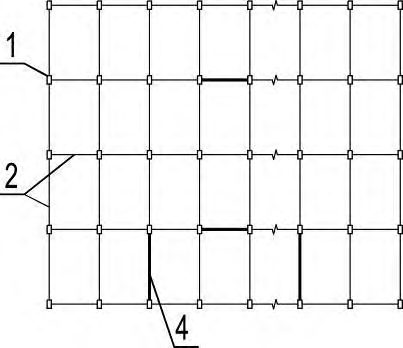
а сборные; б монолитные
Рисунок 5.5 - Ядра жесткости
Сжимающие усилия воспринимаются всем поперечным сечением элементов диска, а на растяжение работает дополнительная арматура межколонных плит, ригели и сварные швы в узлах их крепления к колоннам и плит к ригелям.
Сдвигающие усилия в дисках перекрытия и покрытия воспринимаются плитами по площадкам опирания на ригели, межплитными боковыми и торцевыми швами, сварными соединениями в зонах опирания плит и ригелей. Для обеспечения восприятия сдвиговых усилий швами на стыкуемых поверхностях сборных элементов следует предусматривать углубления для образования растворных шпонок (рисунок 5.6).
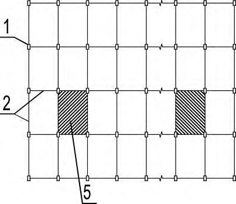
а замкнутые круглые; б - трапециевидные, открытые к верху; в - сплошные продольные
Рисунок 5.6 - Пример боковой поверхности пустотных плит, образующих после омоноличивания межплитные шпонки
Раскосы связевого блока на первом этаже, следует соединять непосредственно с фундаментами колонн.
Точки пересечения вертикальной оси колонны с осями элементов связи должны быть максимально сближены.
Примечание - Допускается, при соответствующем расчетном обосновании, не устанавливать связи на верхнем этаже здания.
5.4Рамные каркасы
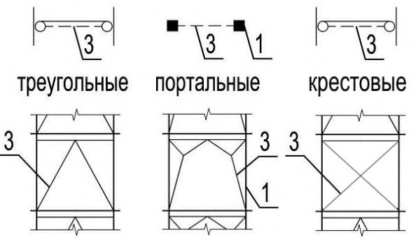
а - с опиранием на открытую консоль; б - с опиранием на скрытую консоль
Рисунок 5.7 - Рамный узел сопряжения ригеля с колонной
5.5Рамно-связевые каркасы
6Расчет несущей системы здания
6.1Нагрузки и воздействия
Температурные воздействия следует учитывать при размерах температурного блока выше определенного расчетом в соответствии с 9.24 СП 27.13330.2017, для производственных зданий с повышенными технологическими температурами и в особых случаях, указанных в техническом задании на проектирование;
Нагрузки в стадии возведения рекомендуется учитывать при конструктивных схемах каркаса на период монтажа, отличных от схемы в стадии эксплуатации: установка временных фиксирующих устройств при монтаже, ветровые нагрузки на колонны, внутренние стены, диафрагмы жесткости, снеговые - на междуэтажные перекрытия. При этом ветровые и снеговые нагрузки, а также температурно-климатические воздействия принимаются сниженными на 20 %.
- временную распределенную нагрузку на перекрытие и покрытие;
- технологическую нагрузку для производственных зданий.
Прогибы и перемещения ограничиваются следующими требованиями: технологические -обеспечение условий нормальной эксплуатации технологического оборудования разного рода; конструктивные - обеспечение целостности заполнения каркаса стенами, перегородками, оконными и дверными элементами; физиологические - предотвращение вредных воздействий и ощущений дискомфорта при перемещениях и колебаниях; эстетико-психологические - обеспечение благоприятных впечатлений от внешнего вида конструкций, исключение ощущений опасности и дискомфорта.
6.2Расчет каркасной конструктивной системы
- расчет несущей системы с определением усилий и деформаций;
- расчет элементов конструктивной системы (колонн, ригелей, плит перекрытий и покрытия, фундаментов, стен, элементов жесткости) по предельным состояниям первой и второй групп;
СП 356.1325800.2017
- расчет зданий на прогрессирующее обрушение для обеспечения прочности и устойчивости каркаса при возможной аварийной ситуации, которую следует предусматривать для зданий классов КС-3 и КС-2 с массовым нахождением людей согласно 5.2.6 ГОСТ 27751-2014;
- оценку несущей способности основания и деформации фундаментов.
Рекомендуется учитывать работу стен в составе каркаса, которые воспринимают часть горизонтальной нагрузки, что заметно повышает жесткость системы «каркас-стена» и изменяет значение и распределение усилий в его элементах.
Распределение перемещений по высоте связевого и рамного каркасов, работающих совместно со стенами, допускается принимать линейным.
Жесткости железобетонных элементов определяют по поперечному сечению с учетом образования трещин, а также учитывая развитие неупругих деформаций в бетоне и арматуре по диаграммам состояния, соответствующих кратковременному и длительному действиям нагрузки.
При применении упрощенных диаграмм состояния бетона и арматуры жесткость железобетонных элементов на ее начальном участке определяется как для упругого тела. На следующих участках необходимо учитывать напряженное состояние по принятой диаграмме в соответствии с разделом 6 СП 63.13330.2012.
Учитывая, что распределение усилий в элементах конструктивных систем зависит, в основном, не от значения, а от соотношения жесткостей этих элементов, при расчете по предельным состояниям первой и второй групп в первом приближении рекомендуется принимать модуль упругости материала равным Еb с понижающими коэффициентами: 0,8 - для колонн, ригелей, плит перекрытий (покрытий) с учетом длительности действия нагрузки; 0,35 - для швов в узлах сопряжения конструкций.
Запас по устойчивости должен быть не менее чем двукратным.
При расчете устойчивости положения конструктивные системы следует рассматривать как жесткое недеформированное тело. При расчете на опрокидывание удерживающий момент от вертикальной нагрузки должен превышать опрокидывающий момент от горизонтальной нагрузки с коэффициентом 1,5. При расчете на сдвиг удерживающая горизонтальная сила должна превышать действующую сдвигающую силу с коэффициентом 1,2. При этом следует учитывать наиболее неблагоприятные значения коэффициентов надежности по нагрузке.
Расчеты по наклонным и пространственным сечениям железобетонных элементов следует производить на основе полученных комбинаций усилий по схемам, приведенным в СП 63.13330.
6.3Уточненные расчетные схемы каркаса
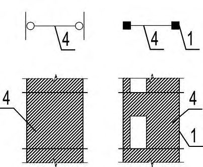
Рисунок 6.1 -Схемы жестких узлов
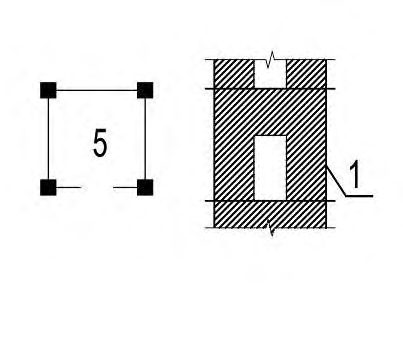
а - конструктивная; б - расчетная
Рисунок 6.2 - Схемы шарнирных узлов
Критерием предельного состояния узлового сопряжения колонны с перекрытием рекомендуется принимать допустимый угол поворота опорного сечения ригеля или плиты перекрытия относительно оси колонны, который определяется:
- для предельных состояний первой группы - из условий достижения физического или условного предела текучести в растянутой или сжатой арматуре, временного сопротивления сжатию бетона шва или стыкуемых конструкций, предельного сдвига или отрыва закладных деталей;
- для предельных состояний второй группы - из условий предельных прогибов и горизонтальных перемещений, предельного раскрытия трещин.
Для рассматриваемых узлов типовых конструкций сопряжения ригеля с колонной коэффициент угловой жесткости стыка рекомендуется определять по формуле
где Ci B 1 и Tj B 1 - приращения смещений от единичных усилий соответственно в сжатой и растянутой зонах сечения стыка; h 0 - расстояние между линиями измерения перемещений (расстояние от линии опирания ригеля или плиты перекрытия на консоль до центра тяжести растянутой или сжатой арматуры).
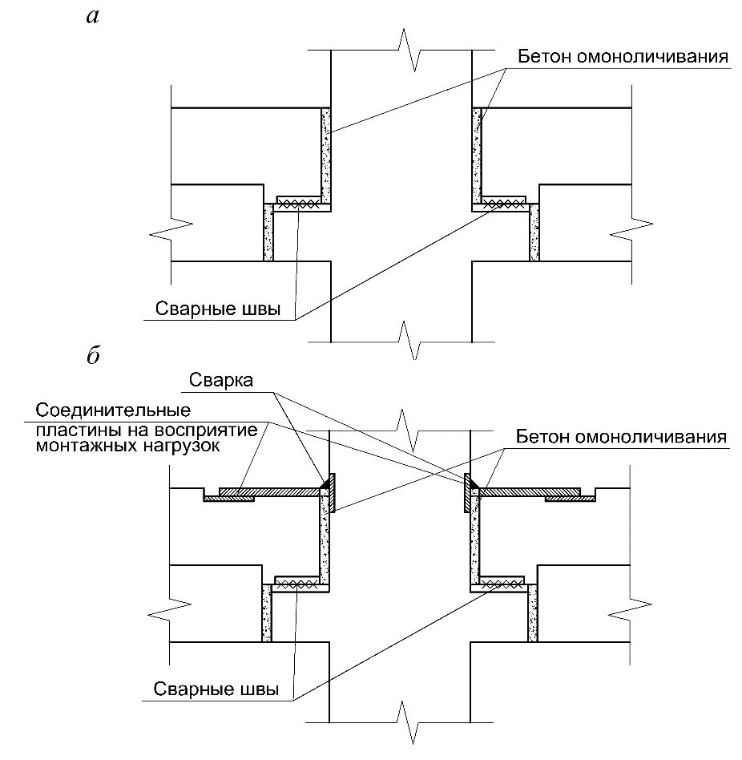
Рисунок 6.3 - Связевая панель
Стальные элементы соединяются с колонной через закладные детали, обладающие, как правило, некоторой податливостью. Поэтому осевую жесткость стальных элементов связей, соединенных с колонной Ds следует определять по формуле
где Es и As - модуль упругости и площадь сечения стального элемента; λ - проекция смещения закладной детали на ось стального элемента от действия единичной силы по этой оси; l ст - длина стального элемента.
Рисунок 6.4 - Сборная железобетонная диафрагма жесткости
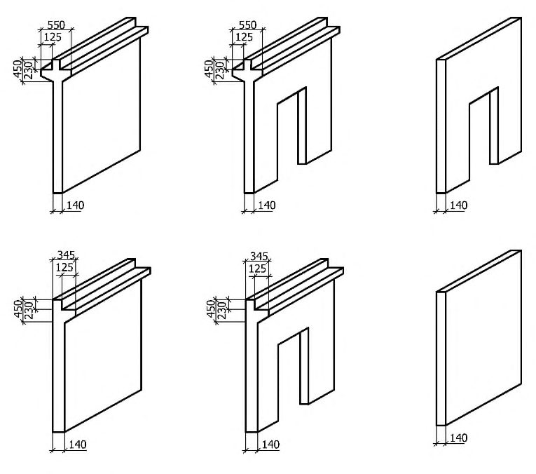
где I - момент инерции всего ослабленного проемами сечения диафрагмы;
Eb - модуль деформации бетона; k п - коэффициент ползучести бетона, принимаемый равным: 0,85 при непродолжительном действии нагрузок и ( ) , 1 1 φ b cr + -при продолжительном действии нагрузок, где , φ b cr -коэффициент ползучести, значение которого принимают согласно 6.1.16 СП 63.13330.2012; k а = 1,02 - коэффициент, учитывающий наличие арматуры; k ш - коэффициент, учитывающий податливость сварных соединений и определяемый по формуле
здесь H и b - высота и ширина диафрагмы, k р - коэффициент, учитывающий влияние перемычек над проемами и равный
для этажа с одним проемом коэффициент р определяется по формуле
здесь h - высота этажа; l - ширина проема;
I п - момент инерции сечения перемычки над проемом;
A 1 и A 2 - площадь сечения «столбов» диафрагмы у обеих сторон проема;
I 1 и I 2 - моменты инерции сечения столбов.
При наличии в диафрагме на одном этаже нескольких проемов значение p принимается равным сумме значений pi , определенных по формуле (6.7) для каждого i -го проема.
Сдвиговую жесткость диаграммы допускается определять по формуле
где G - модуль сдвига бетона стенки равный 0,4 Eb ;
А - площадь диафрагмы без учета проемов.
где b и h - толщина и ширина стены;
Е - для бетонной стены Е = Еb , для кирпичной стены Е = 0,8 Е 0 , где Е 0 - модуль деформации кладки, следует принимать согласно СП 15.13330;
- G - модуль сдвига; для кирпичной стены G = 0,4 Е 0 .
При наличии проемов ширину стены h в формуле (6.9) следует принимать за вычетом ширины проемов на участках высотой равной высоте проемов.
Аналогично следует определять жесткость ядра из монолитного железобетона и из кирпича. При этом для стен из железобетона принимается k ш=1,0, а для стен из кирпича k п k а k ш = 1,0, Еb = 0,8 Е 0 , G = 0,4 Е 0 .
где k р,кр - коэффициент, учитывающий влияние перемычек над проемами в стенах ядра, равный
I кр - момент инерции свободного кручения, определяемый по формуле
здесь Ω удвоенная площадь, ограниченная средней линией контура поперечного сечения ядра;
- sw - длина w -го участка ядра постоянной толщины δ w (включая проемы); a и b - размеры ядра в плане по осям стен; пр / C h h = - отношение высоты проема к высоте этажа;
- ν - коэффициент, зависящий от отношения высоты перемычки h п к ширине проема l и определяемый по формуле
bs - расстояние между центрами тяжести столбов по обе стороны проема.
Остальные обозначения - см. формулы (6.7) и (6.8).
Суммирование в знаменателе формулы (6.12) распространяется на все проемы.
Из-за податливости многочисленных швов жесткость дисков перекрытия и покрытия существенно снижается по сравнению со сплошным монолитным перекрытием. Снижение допускается учитывать введением пониженного значения модуля упругости при постоянном соотношении между приведенными модулями сдвига и упругости, принимаемом для сборных перекрытий при качественной заделке швов в соответствии с 6.2.4.
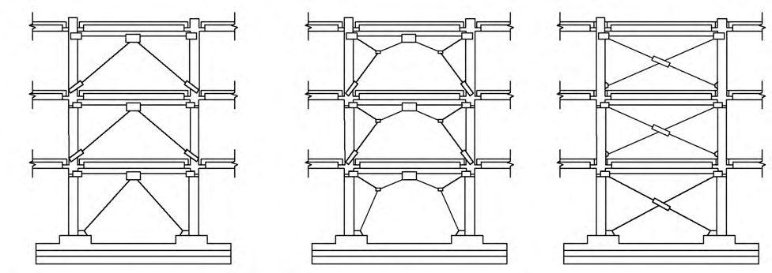
Рисунок 6.5 - Фрагмент сборного перекрытия из многопустотных плит
- вертикальные стыки торцов плит через бетонные швы с опорными конструкциями - ригелями;
- продольные стыки между плитами;
- горизонтальные стыки (швы) плит по опорным площадкам с поддерживающими конструкциями (стенами, балками или ригелями).
Совместная работа многопустотных плит обеспечивается замоноличенными швами и сварными соединениями (для связевых и пристенных плит). Для увеличения сцепления бетона швов с конструкциями на их боковой поверхности устраиваются углубления для образования шпонок.
Торцевые швы между плитами и поддерживающими конструкциями работают только на сжатие и сдвиг перпендикулярно к пролету плит.
Концентрация деформаций происходит в зонах сопряжений сборных конструкций, на основании этого расчетную модель ячейки перекрытия рекомендуется представлять в виде (рисунок 6.6) плоскостных 1 и стержневых 2 элементов, соединенных деформируемыми связями 3 . Учет работы перекрытия из своей плоскости производится путем применения в расчетной модели пластин и связей как пространственных элементов.
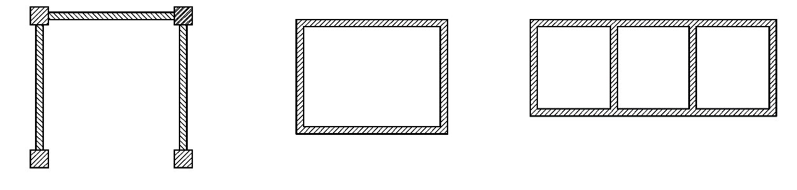
а - расчетная модель ячейки перекрытия; б - схемы деформирования при наличии связей
Рисунок 6.6 - Расчетная модель ячейки перекрытия и схемы деформирования
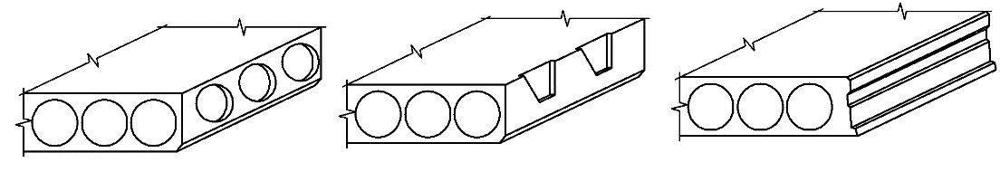
а - схема межплитного шва; б - поворот вдоль продольной оси; в - сдвиг плит
Рисунок 6.7 - Схема работы продольного межплитного шва
Для участка шва, толщиной t jt , высотой hjt и длиной вдоль оси плиты l jt :
где ν = 1,2 - коэффициент, учитывающий неравномерность касательных напряжений по площади поперечного сечения элемента.
Влияние сдвиговой жесткости шва на совместную работу плит следует учитывать для Dsh =300 кН/м, что существенно меньше реальной жесткости. Для швов между типовыми многопустотными плитами значение сдвиговой жесткости Сsh на 1 м шва составляет 308 ∙ 10 5 кН/м.
Линейную податливость связевых плит следует определять, согласно схеме на рисунке 6.8 по формуле
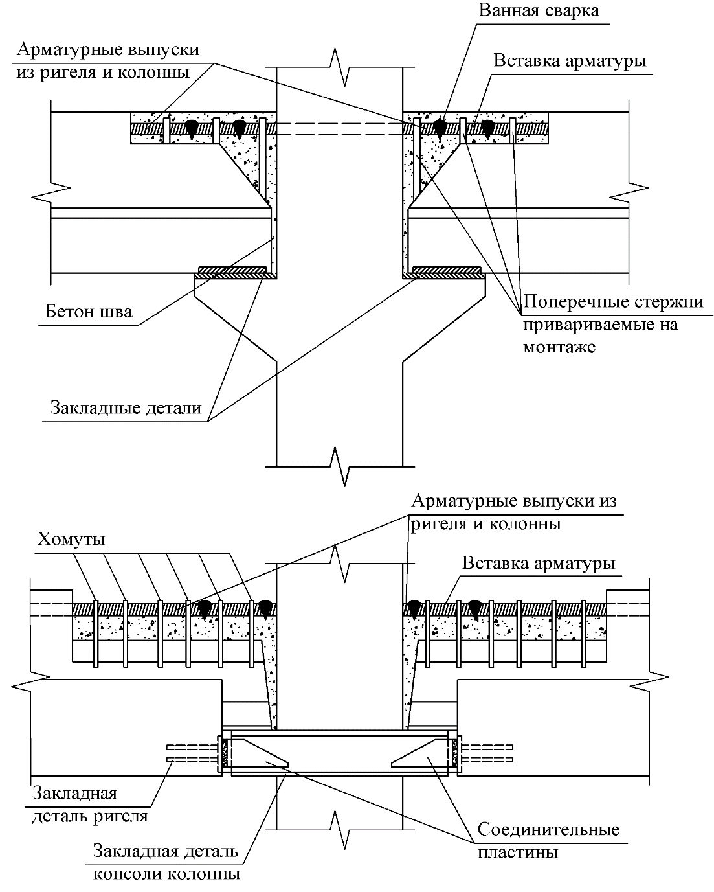
1 - плиты; 2 - ригели; 3 - колонны; 4 - арматурные связи
Рисунок 6.8 - Расчетная схема к определению жесткости связевой плиты при растяжении в плоскости диска перекрытия
где Ns = As σ s - усилие в связевой арматуре;
Nsup = Asup σ sup f tr - усилие для преодоления трения по площадкам опирания плит на поддерживающие конструкции; здесь A sup и sup - площадь опирания и опорное давление плиты на ригель; f tr коэффициент трения плиты об опорную конструкцию; s s s s s E A l N = - деформации связевой арматуры;
z - деформации закладной детали, определяемые по расчету и принимаемые не более 2 мм.
Опорное сопряжение ребристой плиты с ригелем рекомендуется представлять в виде стержня, сечение и длина которого определяется из условия равенства линейных и угловых деформаций.
Жесткость элемента связи при растяжении-сжатии в этом случае определяется по формуле
где Nx горизонтальное усилие на соединение вдоль оси X.
где Еb, Аb,red и аb - модуль упругости бетона, площадь и толщина шва замоноличивания соответственно.
При действии горизонтальной силы, растягивающей бетонный шов, жесткость соединения определяется по формуле (6.21).
6.4Учет физической и геометрической нелинейности
7Проектирование железобетонных конструкций
7.1Общие положения
- по расчету железобетонных конструкций без предварительного напряжения по предельным состояниям первой и второй групп согласно разделу 8 СП 63.13330.2012;
- по расчету железобетонных предварительно напряженных конструкций по предельным состояниям первой и второй групп согласно разделу 9 СП 63.13330.2012;
- по геометрическим размерам элементов конструкций согласно подразделу 10.2 СП 63.13330.2012;
- по армированию (содержанию и расположению арматуры, толщине защитного слоя бетона, анкеровке и соединениям арматуры) согласно подразделу 10.3 СП 63.13330.2012;
- по защите конструкций от неблагоприятного влияния воздействий среды согласно СП 28.13330.
При возможности неравномерной осадки фундаментов следует предусматривать разделение конструкций осадочными швами.
- в качестве напрягаемой арматуры -стержневую горячекатаную периодического профиля классов А600, А800 и А1000 по ГОСТ 5781 и стержневую термомеханически упрочненную периодического профиля классов Ат600С, Ат800, Ат1000 по ГОСТ 10884; арматурные канаты классов К1400 и К1500 по ГОСТ 13840; высокопрочную проволоку периодического профиля классов от Вр1200 до Вр1600 по ГОСТ 7348; стержневую горячекатаную периодического профиля класса А400 по ГОСТ 5781 упрочненную вытяжкой, с контролем значений напряжения и предельного удлинения;
- в качестве ненапрягаемой арматуры - стержневую горячекатаную периодического профиля класса А400 и гладкую класса А240 по ГОСТ 5781; стержневую термомеханически упрочненную класса Ат400С по ГОСТ 10884; стержневую горячекатаную или термомеханически упрочненную класса А500С по ГОСТ Р 52544; арматурную проволоку периодического профиля классов В500 и Вр500 по ГОСТ 6727 и В500С по ГОСТ Р 52544.
7.2Фундаменты
- столбчатые на естественном основании;
- ленточные на естественном основании;
- сплошные (плитные) на естественном основании;
- свайные.
Расчет оснований
- по проектированию соответствующих конструкций, в соответствии с 5.2.7 СП 22.13330.2016.
Общие данные
- а) обеспечения жесткой заделки колонны в фундаменте H ф.з ≥ h з + 0,25 м;
- где для сплошной колонны h з ≥ h ( h - больший размер сечения колонны);
- б) обеспечения анкеровки рабочей арматуры колонн H ф.ан ≥ h ан + 0,25 м, где h ан следует определять в соответствии с 10.3.25 СП 63.13330.2012;
- в) устройства фундамента ниже глубины промерзания грунта df , которую следует определять в соответствии с 5.5.4 СП 22.13330.2016.
В перечислениях а) и б) в формулах H ф.з и H ф.ан 0,25 м - минимальная толщина дна части стакана 0,2 м с учетом подливки под колонну 0,05 м.
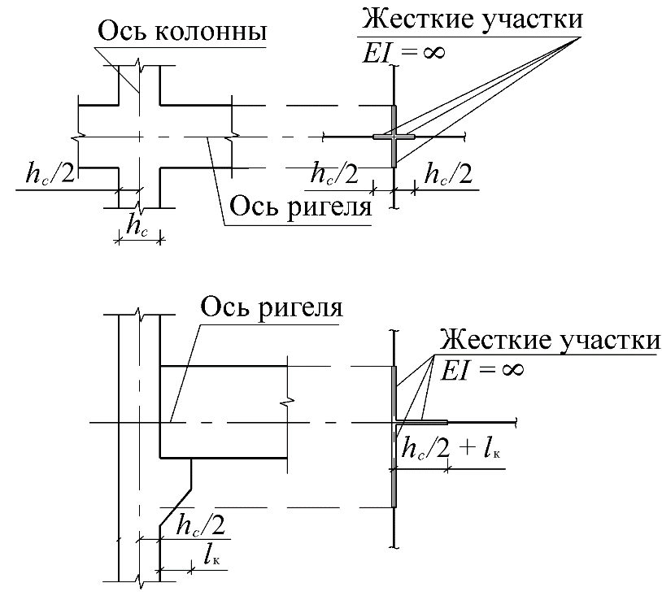
1 подколонник; 2 плитная часть фундамента
Рисунок 7.1 - Сопряжение столбчатого фундамента с колонной
Расчет фундаментов
Расчет плитной части фундамента на продавливание
Момент сопротивления контура расчетного поперечного сечения Wb определяют по формуле
где l c и bc - рисунок 7.2; h 0 -рабочая высота плитной части фундамента, равная среднеарифметическому значению рабочих высот для арматуры плиты в направлении размеров l и b .
Рисунок 7.2 - Схема для расчета фундамента на продавливание
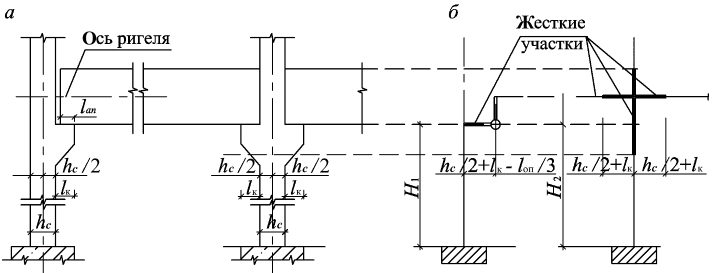
Рисунок 7.3 - К расчету фундамента стаканного типа на продавливание
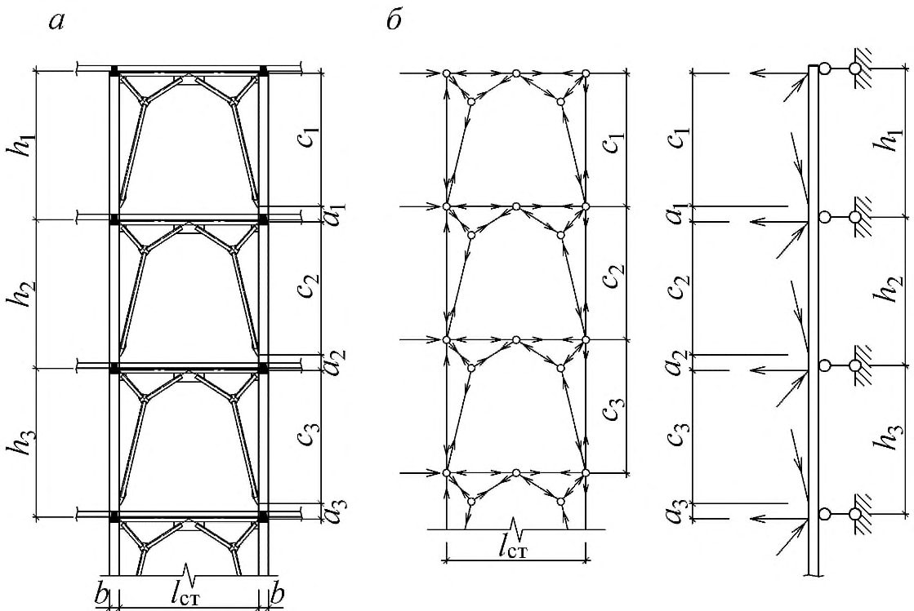
Расчет фундамента на раскалывание
где Al и Ab площади вертикальных сечений фундамента в плоскостях, проходящих по оси колонны параллельно сторонам l и b подошвы фундамента соответственно, за вычетом площади стакана (рисунок 7.4).
Рисунок 7.4 - К расчету фундамента стаканного типа на раскалывание
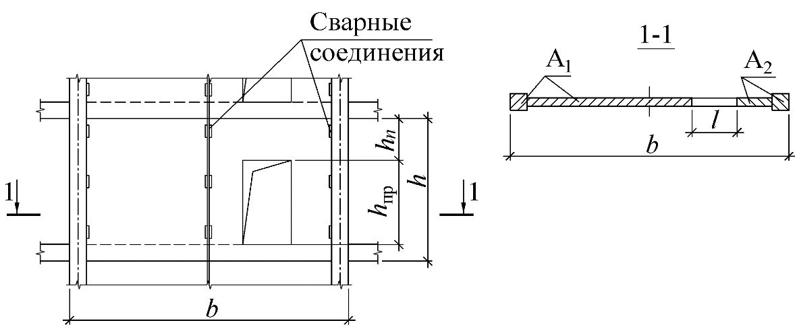
Расчет фундамента на местное сжатие
Расчет стаканной части подколонника
В железобетонных внецентренно сжатых подколонниках площадь сечения арматуры с каждой стороны ( А и А' ) должна быть не менее 0,05 % площади поперечного сечения подколонника.
Железобетонные подколонники армируются продольной и поперечной арматурой по рисунку 7.5.
Минимальный процент содержания арматуры А и А' во внецентренно сжатых подколонниках, несущая способность которых при расчетном эксцентриситете используется менее чем на 50 %, независимо от гибкости принимается равным 0,05 %.
Рисунок 7.5 - Армирование подколонника и его стаканной части
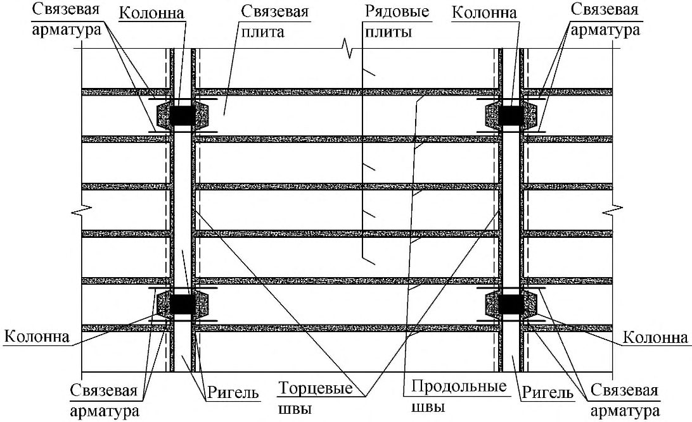
где M, N и Q - усилия в сечении колонны по верху подколонника.
При одинаковых диаметрах поперечной арматуры и одинаковой марке стали площадь сечения поперечной рабочей арматуры каждой сварной сетки равна
В случае заглубления стакана в плитную часть фундамента сечение поперечной рабочей арматуры сеток так же определяется по формулам (7.5), (7.6); сетки поперечного армирования устанавливаются в пределах подколонника.
В случае действия нормальной силы в пределах ядра сечения 0 6 c l e поперечное армирование подколонника назначается конструктивно.
Конструирование фундаментов
Диаметр рабочих стержней, укладываемых вдоль стороны фундамента размером 3 м и менее, должен быть не менее 10 мм; диаметр рабочих стержней, укладываемых вдоль стороны размером более 3 м, - не менее 12 мм.
Арматурные сетки должны быть сварены во всех точках пересечения стержней. Допускается часть пересечений связывать проволокой при условии обязательной сварки всех точек пересечения в двух крайних рядах по периметру сеток.
При возможности изготовления и транспортировании сеток больших размеров с требуемым диаметром допускается армировать подошвы фундаментов цельными сетками.
Рисунок 7.6 - Армирование подошвы фундамента сетками
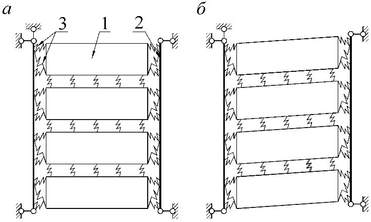
Диаметр продольных рабочих стержней подколонников должен быть не менее 12 мм.
Поперечное армирование стенок стакана следует выполнять в виде сварных плоских сеток с расположением стержней у наружных и внутренних поверхностей стенок.
Диаметр стержней сеток следует принимать по расчету, но не менее 8 мм и не менее четверти диаметра продольных стержней подколонника.
Расстояние между сетками следует назначать не более четверти глубины стакана и не более 200 мм.
Подколонник ниже дна стакана армируется по общему принципу армирования подколонников. Продольная рабочая арматура подколонника, устанавливаемая по расчету, должна проходить внутри ячеек сеток поперечного армирования.
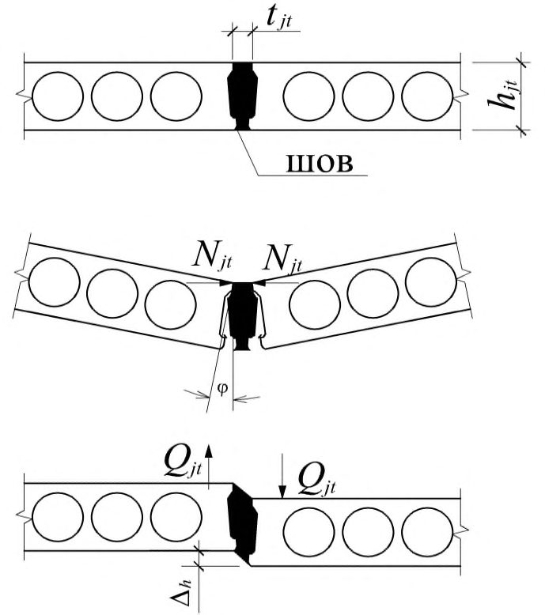
а отдельные ленты; б перекрестные ленты
Рисунок 7.7 - Ленточные монолитные фундаменты под колонны
Рисунок 7.8 - Пример ленточного фундамента под связевой панелью
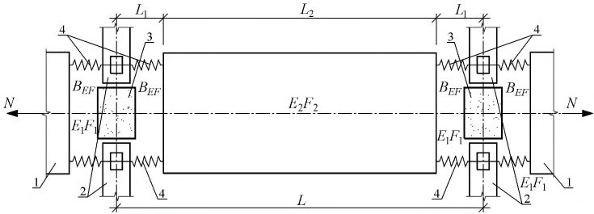
Сплошные фундаменты выполняют: плитными безбалочными, плитнобалочными и коробчатыми (рисунок 7.9). Наибольшей жесткостью обладают коробчатые фундаменты. а плитный безбалочный; б плитно-балочный; в коробчатый
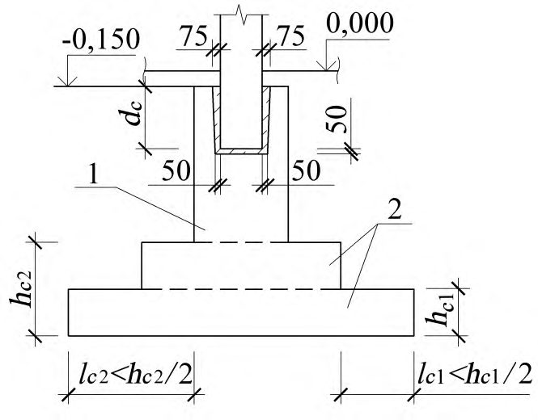
Рисунок 7.9 - Сплошные фундаменты под колонны
Плитные и свайные фундаменты
7.3Колонны
Общие данные
- от числа этажей в пределах высоты колонны:
- 1 - одноэтажные;
- 2 - двухэтажные;
- 3 - трехэтажные;
- от расположения колонны в каркасе здания по высоте:
КВ - верхние;
КС - средние;
КН - нижние;
КБ - на всю высоту здания (бесстыковые);
- от числа консолей в пределах этажа:
О - одноконсольные;
Д - двухконсольные.
Двухконсольные колонны устанавливаются по средним осям здания, одноконсольные - по крайним осям. Кроме того, одноконсольные колонны могут устанавливаться по средним осям при одностороннем примыкании диафрагм жесткости поперечного направления в лестничных клетках.
Бесконсольные колонны устанавливаются по средним осям зданий (при двухстороннем примыкании к ним диафрагм жесткости поперечного направления) и в лестничной клетке (при использовании диафрагм жесткости поперечного направления).
Расчет колонн
Рисунок 7.10 - Сечение с сосредоточенной симметричной арматурой
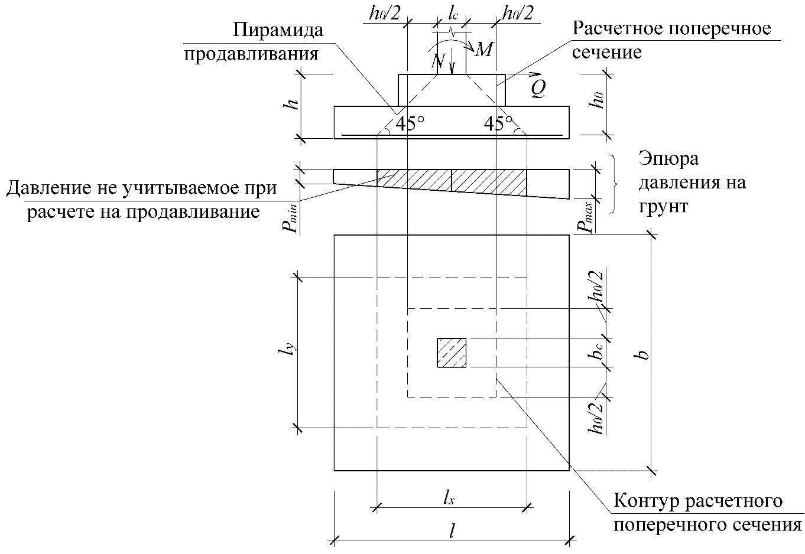
Рисунок 7.11 - Сечение с распределенной арматурой ξ ξ R
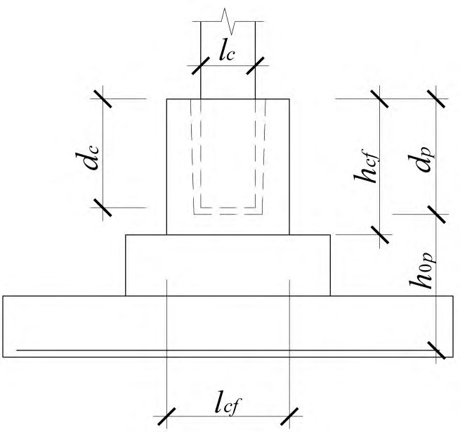
.
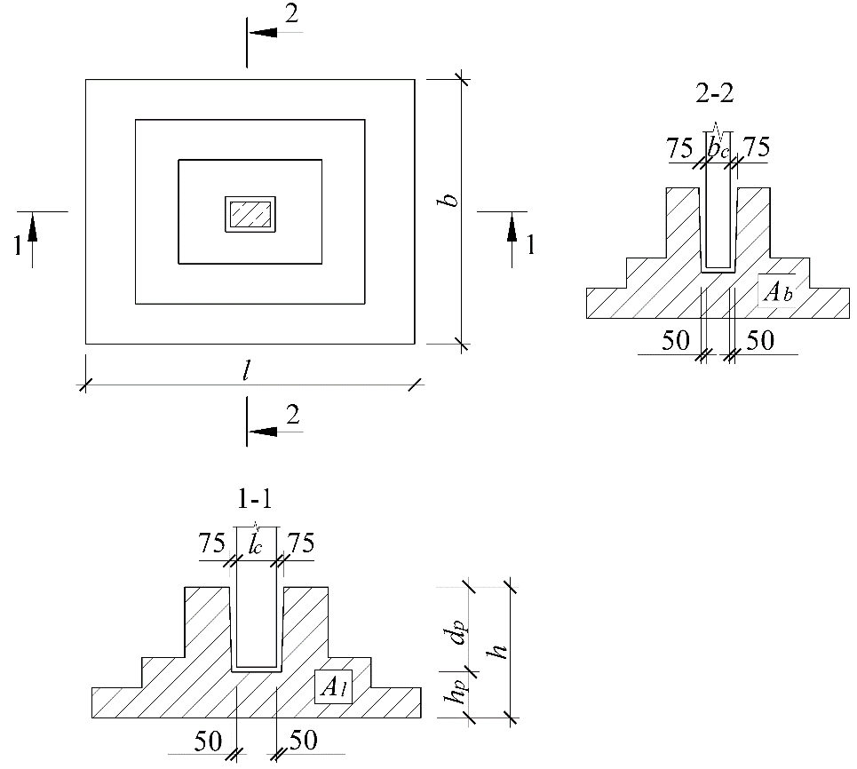
а - сечение с распределенной арматурой; б - эпюры деформаций; в эпюры напряжений при действии усилий N гр и M гр
Рисунок 7.12 - Сечение с распределенной арматурой при ξ ξ R
где Мх и Му - моменты внешней силы N в плоскостях симметрии х и у относительно центра тяжести сечения;
0 0 и y x M M -предельные моменты в плоскостях симметрии х и у относительно центра тяжести сечения при действии внешней продольной силы, приложенной в центре тяжести сечения.
Места строповки колонны и места опирания колонн при транспортировании рекомендуется устанавливать так, чтобы эти расчеты не приводили к увеличению армирования.
Конструирование колонн
В одном плоском каркасе продольные рабочие стержни рекомендуется принимать, как правило, одного диаметра. При применении двух различных диаметров они должны отличаться не менее чем на два номера.
При необходимости продольные стержни можно выполнять спаренными, без зазора между ними в соответствии с 10.3.5 СП 63.13330.2012.
В местах стыкования продольной рабочей арматуры внахлестку без сварки поперечные стержни устанавливаются на расстоянии не более 10 d и не более 300 мм.
При назначении расстояния между поперечными стержнями и хомутами не принимаются во внимание сжатые продольные стержни конструктивной арматуры диаметром 12 мм, не учитываемые в расчете.
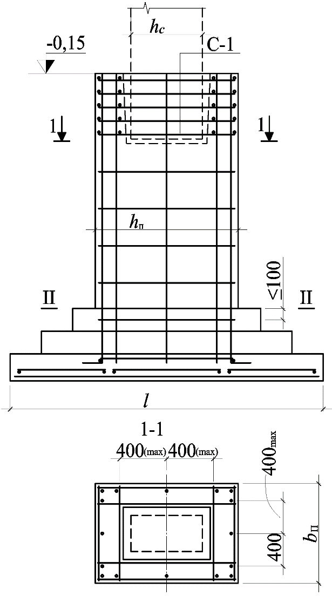
а из ранее согнутых и сваренных хомутов; б со спиральной арматурой
Рисунок 7.13 - Пространственные арматурные каркасы без промежуточных стержней
Если крайние плоские сварные каркасы, расположенные у противоположных граней, с промежуточными продольными стержнями, то они, по крайней связываются с продольными стержнями противоположной грани с помощью поперечных стержней или шпилек, устанавливаемых по длине каркаса на том же расстоянии, что и поперечные стержни плоских каркасов. Такие соединительные стержни не ставят при ширине грани до 500 мм, если число продольных стержней у этой грани не более четырех.
Плоские каркасы рекомендуется объединять в пространственный каркас приваркой соединительных поперечных стержней.
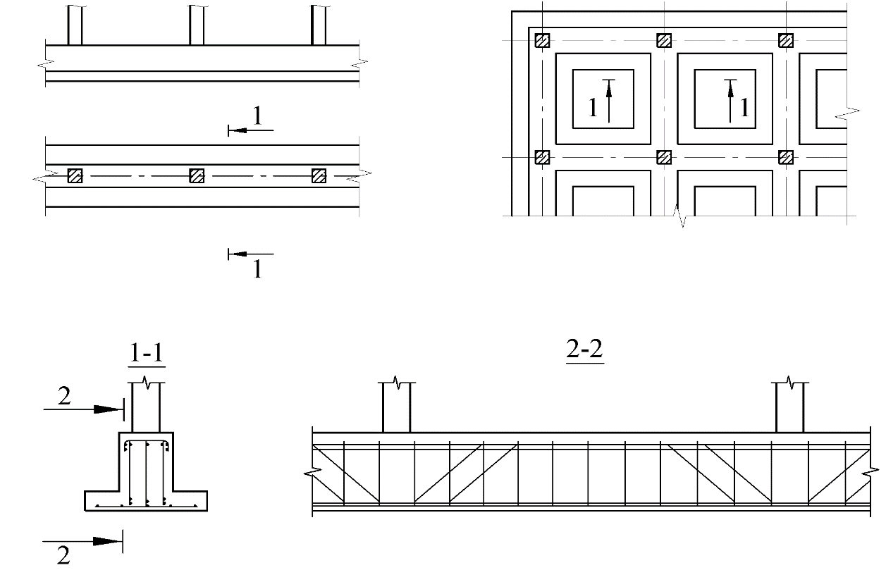
а - колонны, внецентренно сжатых в одной плоскости; б - колонны, внецентренно сжатые в обеих плоскостях; 1 - плоский каркас; 2 - соединительный стержень (поперечный привариваемый стержень или шпилька)
Рисунок 7.14 - Примеры конструкций пространственных каркасов сварных колонн (в скобках приведены размеры граней при толщине защитного слоя до продольной арматуры не менее 25 мм)
При образовании общего пространственного сварного каркаса колонны отдельные поперечные стержни плоских каркасов при пересечении их другим плоским каркасом или закладной деталью (например, в месте сопряжения сварных каркасов распорки и ветви в двухветвевой колонне) можно вырезать, при этом вместо вырезанных поперечных стержней должны быть предусмотрены шпильки.
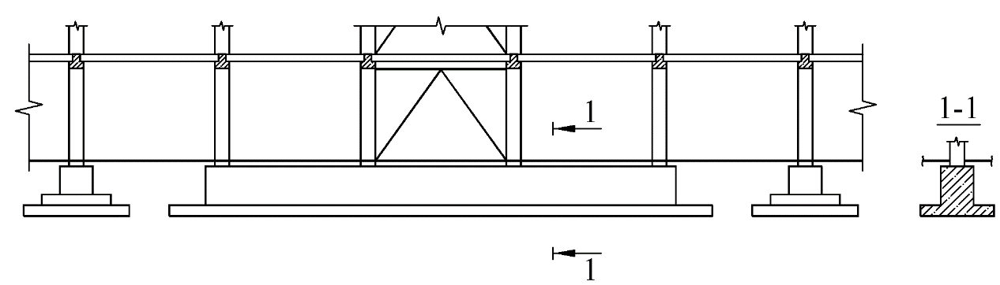
1 - плоские сварные каркасы; 2 - поперечные отдельные стержни, привариваемые точечной сваркой к продольным стержням плоских каркасов
Рисунок 7.15 - Конструкции сварного пространственного каркаса
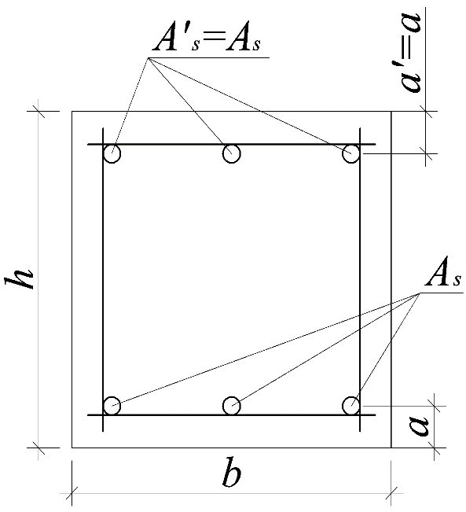
1 - поперечный стержень плоского каркаса; 2 - соединительный стержень
Рисунок 7.16 - Деталь сварки пространственного каркаса
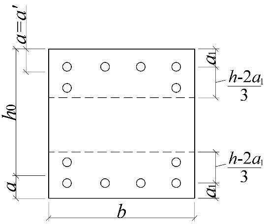
1 - продольные стержни; 2 - поперечные стержни
Рисунок 7.17 - Схема плоского сварного арматурного каркаса
Если на заводе-изготовителе отсутствуют сварочные клещи, то плоские сварные каркасы объединяют в пространственные с помощью шпилек и скоб, которые привариваются к поперечным стержням протяженными швами (рисунок 7.18) длиной не менее 6 dw (здесь dw - диаметр хомута).
При наличии соответствующих гибочных машин пространственные каркасы допускается изготовлять из плоских арматурных сеток.
Рисунок 7.18 - Соединение сварных каркасов скобами
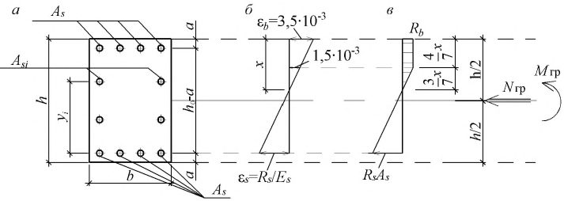
Конструкция хомутов в вязаных каркасах должна быть такой, чтобы продольные стержни (по крайней мере через один) располагались в местах перегиба хомутов, а эти перегибы - на расстояниях не более 400 мм по ширине грани колонны, перпендикулярной к плоскости изгиба, и не более 500 мм по ширине грани, параллельной плоскости изгиба. При ширине грани не более
400 мм и не более четырех продольных стержнях у этой грани охват всех продольных стержней производится одним хомутом.
Длину продольных стержней каркасов рекомендуется назначать так, чтобы исключить устройство стыков. В случае необходимости соединения по длине заготовок арматурных стержней применяется контактная стыковая сварка.
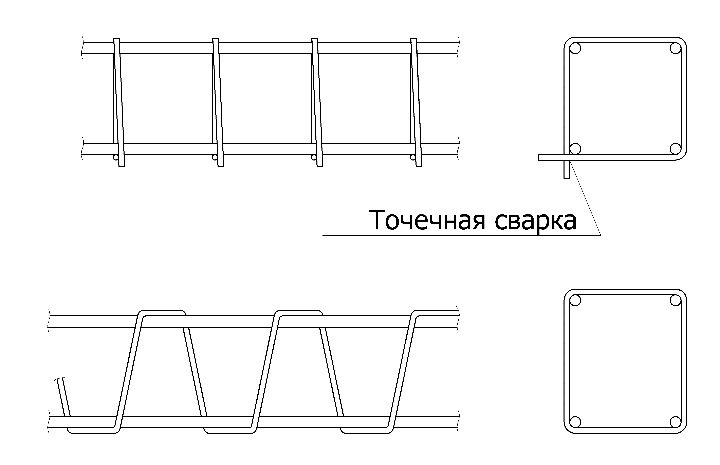
Рисунок 7.19 - Примеры конструкций вязаных каркасов колонн, внецентренно сжатых в обеих плоскости (в скобках приведены размеры граней при толщине защитного слоя до продольной арматуры не менее 25 мм)
Рисунок 7.20 - Армирование консоли колонн при шарнирном опирании ригеля
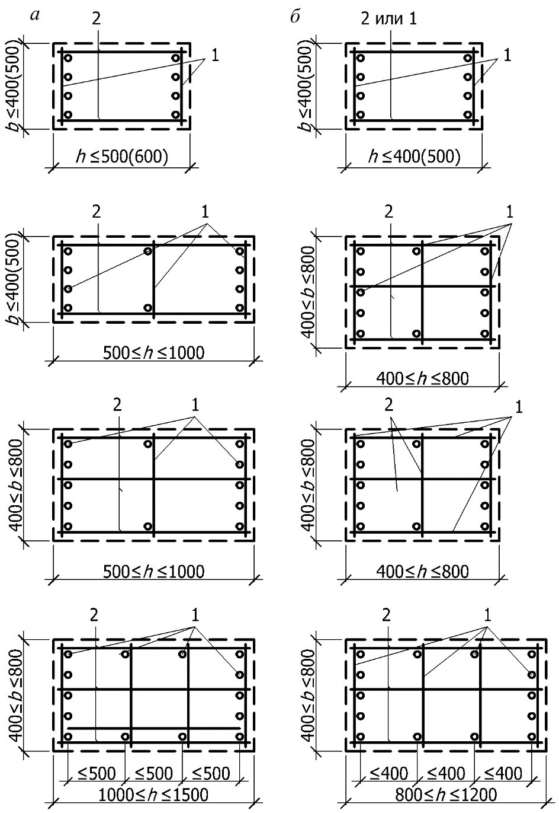
7.4Ригели
Общие данные
- двухполочные - для опирания многопустотных и ребристых плит;
- однополочные - для опирания многопустотных и ребристых плит;
- однополочные, применяемые только в лестничных клетках;
- консольные - для опирания многопустотных плит балконов;
- бесполочные применяемые на торцах зданий в лестничных клетках при перекрытии из многопустных и ребристых плит;
- прямоугольного сечения.
Ригели, в зависимости от их местоположения, подразделяются на три группы: рядовые, торцевые и у температурных швов, лестничные. Ригели перекрытий массового применения из ребристых плит выполняют высотой сечения 600 мм для пролетов 9, 6 и 3 м и высотой сечения 800 мм - для пролетов 6 и 9 м. Ригели перекрытий массового применения из многопустотных плит выполняют высотой 450 мм для пролетов 3, 6 и 7,2 м, высотой 600 мм - для пролета 9 м.
Расчет ригелей
где Q - поперечная сила в сечении, проходящем через точку теоретического обрыва; w sw sw sw S A R q = - усилие в поперечной арматуре на единицу длины элемента.
За точку теоретического обрыва принимается нормальное сечение, в котором внешний момент равен предельному моменту без учета обрываемой арматуры Mult (рисунок 7.21).
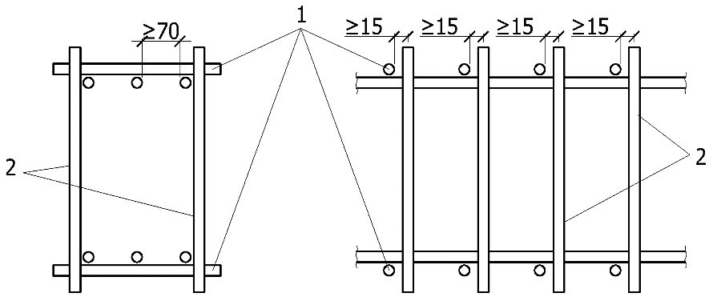
1 - точки теоретического обрыва; 2 - эпюра моментов
Рисунок 7.21 - Обрыв растянутых стержней на опоре и в пролете
Конструирование ригелей
1 сетка с рабочей арматурой; 2 - пространственный арматурный каркас; 3, 4, 6 -закладное изделие; 5 - отгиб
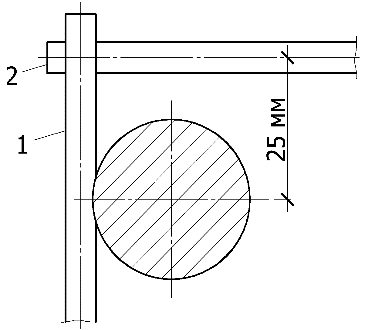
Рисунок 7.22 - Схема армирования опорной зоны ригеля с шарнирным опиранием
Рисунок 7.23 - Пример боковой поверхности ригеля, образующей после омоноличивания растворные шпонки
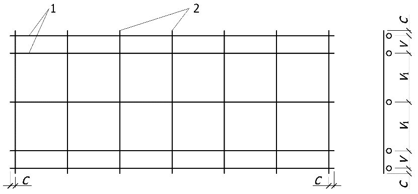
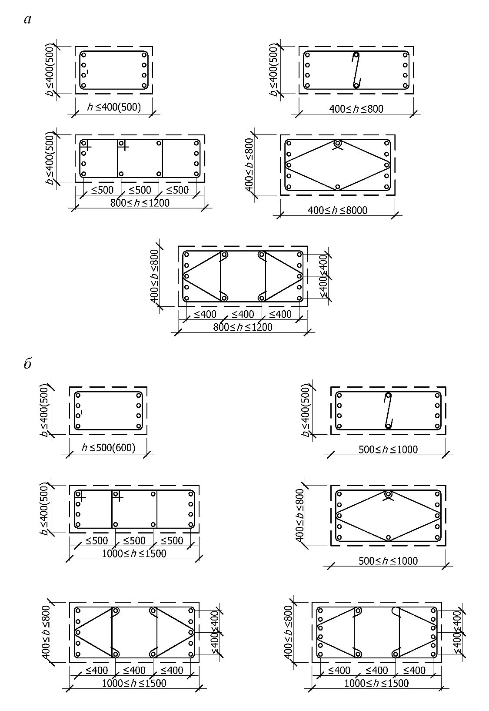
- а пространственный арматурный каркас при соединительных стержнях, привариваемых к вертикальным стержням; б - пространственный арматурный каркас при шпильках, привязываемых к продольным стержням; 1 шпилька (соединительный стержень)
Рисунок 7.24 - Пространственные арматурные каркасы при отсутствии кручения
7.5Ребристые плиты перекрытий и покрытий Общие данные
Рисунок 7.25 - Опалубочный чертеж ребристой плиты размерами 5,65×1,485 м
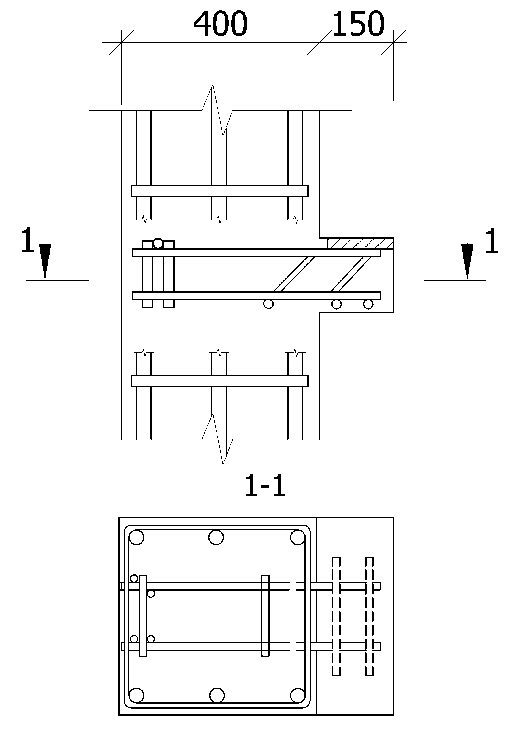
Расчет ребристых плит
Полки плит при соотношении l 2 : l 1 > 2, работающие преимущественно в одном направлении, рассчитываются как неразрезные балочные и армируются сетками с рабочей арматурой в одном направлении.
Армирование ребристых плит
1, 2, 3 арматурный каркас; 4, 5, 6 - арматурная сетка; 7 - монтажная петля
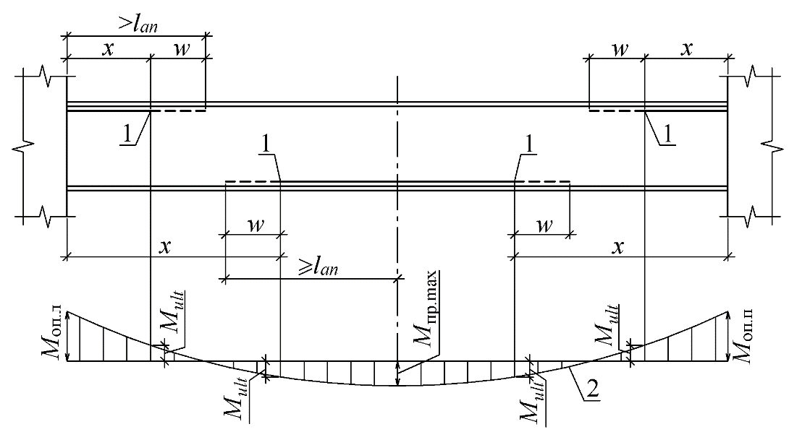
Рисунок 7.26 - Армирование ребристой плиты размерами 5,65×1,485 м (напрягаемая арматура условно не показана)
7.6Многопустотные плиты перекрытий и покрытий Общие данные
Номинальное расстояние между центрами пустот в плитах следует принимать не менее 185 мм (расстояние между пустотами - не менее 26 мм).
Рисунок 7.27 - Опалубочный чертеж рядовой многопустотной плиты размерами 5,65×1,49 м
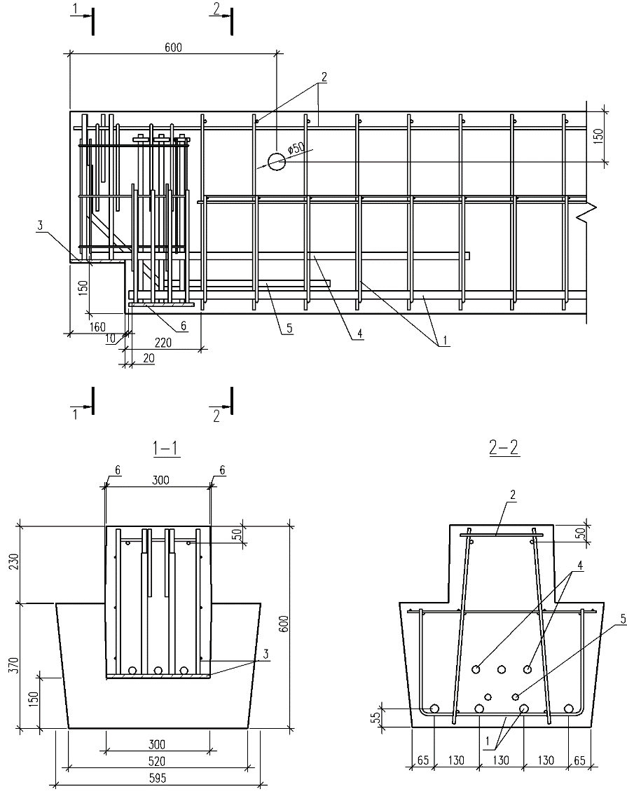
Расчет многопустотных плит
Конструирование многопустотных плит
Заделка пустот в торцах плит, если это предусмотрено в рабочих чертежах, должна быть выполнена бетонными цилиндрами заводомизготовителем, а при их отсутствии - на строительной площадке раствором марки не ниже 100.
7.7Элементы жесткости
1 рабочая растянутая арматура; 2 арматурный каркас; 3, 4, 5 - арматурная сетка; 6 -монтажная петля
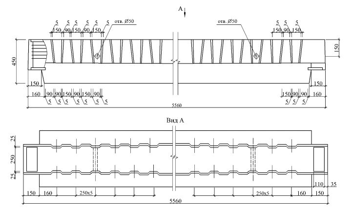
Рисунок 7.28 - Армирование рядовой многопустотной плиты размерами 5,65×1,49 м
Стены ядер жесткости могут выполняться из сборного железобетона аналогично сборным диафрагмам жесткости, из монолитного бетона или из кирпича.
Конструкция сборного ядра жесткости состоит из колонн, объединенных плоскими диафрагмами жесткости.
1 диафрагма жесткости; 2 закладная деталь; 3 - закладная деталь (хомут) в колонне; 4 - колонна
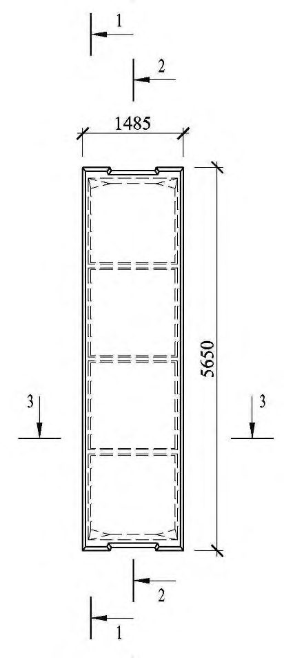
Рисунок 7.29 - Узел примыкания диафрагмы жесткости к колонне
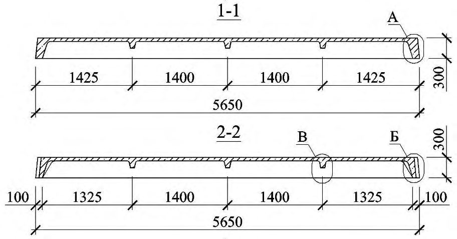
1 монтажная петля; 2 закладная деталь; 3 - арматурный блок; 4 - арматурная сетка
Рисунок 7.30 - Пример армирования диафрагмы жесткости
7.8Наружные стеновые панели
- несущие;
- самонесущие;
- ненесущие.
- однослойные;
- двухслойные;
- трехслойные.
8Указания по монтажу каркаса
СП 356.1325800.2017 перекрытий нижераспложенных этажей. Замоноличивание стыков колонн может производиться одновременно с устройством первого над стыком перекрытия. В период выполнения работ по замоноличиванию этого перекрытия может монтироваться следующее. При ведении опережающего на один этаж монтажа прочность нижерасположенного диска, связывающего элементы жесткости воедино, обеспечивается сваркой связевых плит перекрытия и силами трения.
АПриложение А. Упрощенные схемы расчета каркасов
А.1 На стадии вариантного проектирования для выбора рациональной конструктивной схемы каркаса, подбора типа и числа вертикальных элементов жесткости, их расположения, удовлетворяющих требованиям объемнопланировочных решений, допускается производить раздельно расчеты на вертикальные и горизонтальные нагрузки. Для расчета на вертикальные нагрузки рама разделяется на три одноэтажные рамы: для верхнего, среднего и нижнего этажей (рисунок А.1). а - фактическая расчетная схема рамы; б упрощенные расчетные схемы рамы
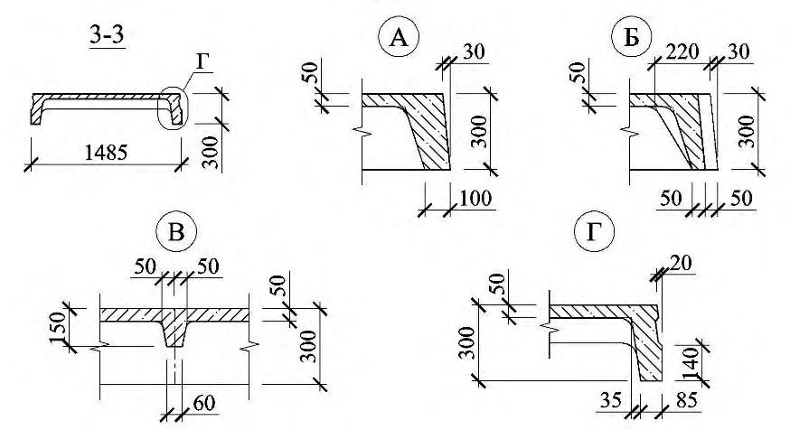
Рисунок А.1 - Схемы рамы
При этом число пролетов принимается не более трех, примыкающие стойки кроме стоек первого этажа - длиной, равной половине высоты этажа, и шарнирами по концам. Влиянием жестких приопорных участков, а также горизонтальными смещениями пренебрегают. При учете этих допущений, для рам с равными пролетами, опорные моменты ригелей Mij при разных схемах загружения допускается определять с помощью таблицы А.1.
В таблице А.1 приняты следующие обозначения:
где Mij - опорный момент в i точке ригеля, j - точка другого конца ригеля;
В риг и В кол - жесткости ригеля и колонны соответственно.
А.2 Изгибающие моменты в стойках для каждой схемы загружения рамы определяют по разности опорных моментов ригелей в узле, распределяя их пропорционально погонным жесткостям стоек В кол / l к .
Расчет на горизонтальные (ветровые) нагрузки производят, принимая нулевую точку эпюры моментов стоек всех этажей, кроме первого, в середине высоты этажа, а для первого этажа на расстоянии 2/3 высоты от низа (рисунок А.2).
Таблица А.1 Коэффициенты α для определения опорных моментов ригелей при различных схемах расположения
нагрузки q
| Схемы расположения нагрузки q от эпюры | k | Коэффициенты α для опорных моментов | Коэффициенты α для опорных моментов | Коэффициенты α для опорных моментов | Коэффициенты α для опорных моментов |
|---|---|---|---|---|---|
| М 12 | М 21 | М 23 | М 32 | ||
| моментов | 0,5 1 2 | -0,072 -0,063 -0,054 -0,046 -0,039 -0,033 -0,027 -0,077 | -0,090 -0,091 -0,093 -0,095 -0,097 -0,099 -0,100 -0,079 -0,074 | -0,083 -0,085 -0,087 -0,088 -0,089 -0,090 -0,091 -0,006 -0,012 -0,018 -0,022 -0,026 | -0,083 -0,085 -0,087 -0,088 -0,089 -0,090 -0,091 -0,006 |
| 1 2 3 4 | 6 0,5 1 2 3 4 5 | -0,042 -0,036 0,005 0,007 0,008 0,009 0,009 0,009 | -0,062 -0,011 -0,017 -0,025 -0,030 | -0,077 -0,073 -0,069 -0,066 -0,063 | -0,077 -0,073 -0,069 -0,066 -0,063 -0,062 |
| 3 | |||||
| 4 | |||||
| 5 | |||||
| 6 | |||||
| 0,5 1 | -0,070 | -0,012 | |||
| 1 4 | 2 | -0,062 | -0,068 | -0,018 | |
| 3 | 3 | -0,055 | -0,065 | -0,022 | |
| 2 | 4 | -0,048 | -0,063 | -0,026 | |
| 1 4 | 5 | -0,063 | -0,028 | -0,028 | |
| 1 4 | -0,030 | -0,030 | |||
| -0,034 | |||||
| -0,036 | -0,062 | ||||
| 6 | 0,009 | -0,038 | -0,061 | -0,061 | |
| 0,5 | -0,071 | -0,092 | -0,088 | -0,072 | |
| 1 | -0,062 | -0,095 | -0,094 | -0,066 | |
| 1 4 | 2 | -0,052 | -0,101 | -0,098 | -0,059 |
| 1 4 | 3 | -0,045 | -0,107 | -0,100 | -0,054 |
| 2 3 | 4 | -0,037 | -0,112 | -0,102 | -0,050 |
| 1 4 | 5 | -0,032 | -0,115 | -0,104 | -0,046 |
| 1 4 | 6 | -0,026 | -0,117 | -0,105 | -0,043 |
Рисунок А.2 - К упрощенному способу определения усилий
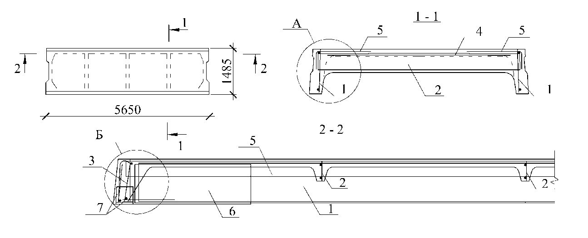
А.3 Ярусные поперечные силы, равные сумме ветровых сил, приложенных к вышележащим перекрытиям определяют по формуле = = j i i W j Q 1 , а затем распределяют эти силы между отдельными стойками
А.4 По найденным поперечным силам определяют моменты в стойках всех этажей, кроме первого, по формуле M = Qkl /2.
Для первого этажа моменты в верхнем и нижнем сечениях равны соответственно M в = Qkl /3 и M н = 2 Qkl /3.
При определении опорных моментов ригелей у средних узлов суммарный момент в узле от выше и ниже расположенных стоек распределяется между ригелями пропорционально их погонным жесткостям. В крайнем узле опорный момент ригеля равен сумме моментов стоек.
Расчет каркаса рамной конструктивной системы
А.5 При каркасе, состоящем из примерно одинаковых поперечных рам, можно ограничиться расчетом одной наиболее нагруженной рамы на действие вертикальных и ветровых нагрузок. Для сокращения расхода арматуры рассчитывают также торцевую раму на действие приходящихся на нее вертикальных нагрузок с учетом веса наружных ограждающих конструкций. В обоих случаях ветровая нагрузка на раму определяется путем деления ветровой нагрузки, собранной со всей длины каркаса на число рам, т.к. перекрытия, объединяющие рамы каркаса, считаются бесконечно жесткими, поскольку деформации сдвига перекрытий в пределах между рамами весьма малы.
А.6 Для каркаса с рамной схемой в продольном направлении, состоящем из примерно одинаковых продольных рам допускается рассчитывать одну продольную раму на действие ветровых нагрузок, собранных со всей ширины каркаса и деленных на число продольных рам. Кроме того, следует учитывать собственный вес продольных ригелей и нагрузки с участка перекрытий, опирающихся на эти ригели.
А.7 При безбалочной схеме перекрытий поперечные и продольные рамы по характеру работы не отличаются друг от друга.
А.8 Расчет на ветровую нагрузку в продольном направлении при связевой схеме этого направления производится аналогично расчету каркаса связевой конструктивной схемы (6.3).
А.9 Если каркас состоит из поперечных рам, резко отличающихся друг от друга схемой или сечениями элементов, то ветровая нагрузка, приходящаяся на более жесткую раму, будет превышать среднюю. Чтобы определить это увеличение, следует учесть поворот перекрытий.
А.10 При наличии в крайних продольных рамах жестких связевых элементов поворотом перекрытий можно пренебречь, и тогда ветровая нагрузка определяется исходя из одинаковых смещений перекрытий всех рам, определяемых из расчета каркаса в целом.
Расчет каркасов связевой конструктивной схемы
А.11 Расчетные схемы связевых каркасов могут быть двух видов: дискретные и дискретно-континуальные.
А.12 Дискретная схема представляет элементы жесткости как консольные стержни, соединенные друг с другом и с каркасной частью здания горизонтальными стержнями на уровне всех перекрытий. Перекрытия, за исключением некоторых оговоренных случаев, считаются абсолютно жесткими в своей плоскости и поэтому горизонтальные смещения элементов жесткости и каркасной части одинаковые.
А.13 Если конструкция и расположение элементов жесткости симметричны, а узлы каркасной части шарнирные, расчетную схему удобно представить в виде одного элемента жесткости и одной колонны с жесткостями, равными сумме жесткостей соответственно всех устоев и всех колонн, соединенные на уровне каждого перекрытия жесткими стержнями (рисунок А.3). а конструктивная схема; б расчетная схема; в - основная система расчета каркаса методом сил
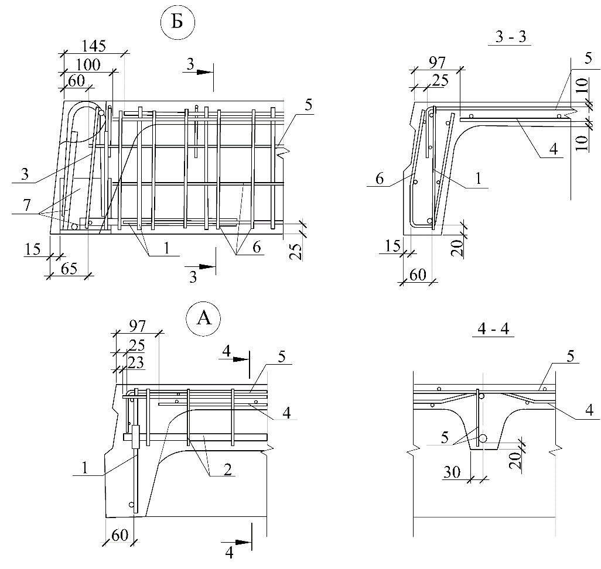
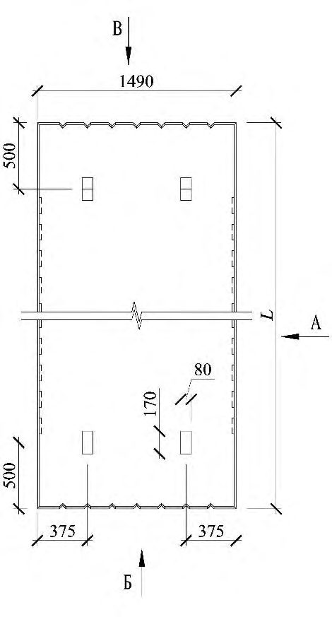
Рисунок А.3 -Схемы связевого каркаса с шарнирными узлами и одинаковыми элементами жесткости
Такую систему, в общем случае рассчитывают методом сил, принимая за неизвестные Xj усилия в жестких стержнях, а за коэффициенты при неизвестных ij сумму смещений элемента жесткости и каркаса как свободных консолей на уровне перекрытия j от действия единичных сил, приложенных к элементу жесткости и каркасу на уровне перекрытия i . Грузовые члены представляют собой смещения устоя как свободной консоли от действия внешней нагрузки.
В результате определяются горизонтальные усилия, приложенные отдельно к обобщенному устою и к обобщенной колонне. Эти усилия затем распределяются между отдельными элементами жесткости и колоннами пропорционально их жесткостям.
А.14 Если узлы каркасной части жесткие, то расчет допускается производить по аналогичной расчетной схеме, принимая обобщенную колонну в виде, показанном на рисунке А.3, где жесткости примыкающих ригелей равны суммам жесткостей ригелей этажа. При этом рекомендуется учитывать жесткие опорные участки ригелей и колонн и податливость жестких узлов. Смещения ij такой колонны определяют методом деформаций, где за неизвестные принимаются углы поворота узлов.
Рисунок А.4 -Схемы связевого каркаса с жесткими узлами и одинаковыми элементами жесткости
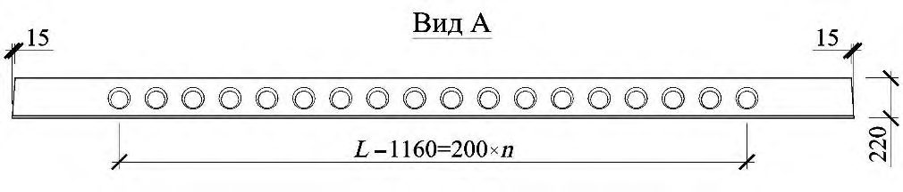
А.15 Если элементы жесткости имеют различную конструкцию с различными долями сдвиговой и изгибной деформации, например стены с проемами и без проемов или связевые панели с различными решетками, между такими элементами жесткости устанавливаются жесткие стержни и число неизвестных увеличивается на число этих стержней. При этом элементы жесткости, расположенные в разных плоскостях, рассматриваются в одной плоскости вместе с обобщенной колонной (рисунок А.5).
а конструктивная схема; б расчетная схема
Рисунок А.5 - Схемы связевого каркаса с различными симметрично расположенными элементами жесткости
А.16 Расчет может также производится методом деформаций (рисунок А.6), когда за неизвестные принимаются смещения каждого перекрытия от внешней нагрузки. При этом за коэффициенты rij при неизвестных принимаются реакции в фиктивных горизонтальных опорах каждого перекрытия j от единичных смещений каждого перекрытия i. Грузовые члены представляют собой внешние горизонтальные силы, приложенные к каждому перекрытию. Такой расчет более трудоемкий (особенно по сравнению с расчетом каркаса с шарнирными узлами), поскольку определение реакций от единичных смещений требует отдельных расчетов методом деформаций. Однако, в некоторых случаях такой расчет бывает необходим. В частности, когда при расчете методом сил с учетом деформированной схемы может быть невозможно определение смещений ij от единичных сил каркасной части изза потери ею устойчивости.
а расчетная схема; б - основная система
Рисунок А.6 - Расчетная схема и основная система расчета методом деформаций связевого каркаса
А.17 При несимметричном расположении элементов жесткости или при различных их конструкциях перекрытия под действием горизонтальных нагрузок, кроме поступательных смещений, будут поворачиваться, увеличивая смещения некоторых рам. В общем случае правильно учесть эти повороты можно только методом деформаций, при котором в основной системе кроме горизонтальных фиктивных опор, препятствующих поступательным смещениям перекрытий в направлении нагрузки, устанавливаются в каждом перекрытии две дополнительные опоры, препятствующие поворотам, но не препятствующие поступательным смещениям. Эти опоры удобней всего устанавливать по краям в углах перекрытий (рисунок А.7).
1 опора, препятствующая поступательному смещению перекрытия; 2,3 опоры, препятствующие повороту перекрытия
Рисунок А.7 - Фиктивные горизонтальные опоры перекрытия при расчете связевого каркаса методом деформаций с несимметрично расположенными или неодинаковыми элементами жесткости
А.18 Учет поворотов перекрытий методом сил основан на фиксации центра жесткости, при приложении к которому внешняя нагрузка не вызывает поворота. Между тем этот центр жесткости в общем случае зависит не только от жесткостей рам каркаса, но и от комбинации усилий, действующих на выше- и нижерасположенные перекрытия, до расчета неизвестных. Поэтому, учитывая большое разнообразие конструкций элементов жесткости и их расположений, такой расчет может приводить к серьезным погрешностям.
А.19 Дискретная расчетная схема -универсальна. Она может применяться при расчете каркасов с любыми комбинациями элементов жесткости, с любым распределением жесткостей элементов жесткости и колонн по высоте, с любым сочетанием высот этажей. Такой расчет, требующий решения систем канонических уравнений высокого порядка, может выполняться только с помощью сертифицированных программных комплексов.
А.20 Дискретно-континуальная расчетная схема отличается от дискретной схемы тем, что горизонтальные нагрузки в виде сосредоточенных сил, а также стержни-связи между элементом жесткости и каркасной частью заменяются на распределенные по высоте нагрузки и усилия, а каркасная часть заменяется на стержень с изгибной и сдвиговой жесткостями, аналогичными каркасной части. Функции распределения усилий и смещений по высоте определяются решением системы дифференциальных уравнений.
Расчет по этой схеме дает результаты, близкие к результатам расчета по дискретной схеме при следующих условиях:
- число этажей более шести;
- высоты этажей одинаковы;
- жесткости элементов жесткости и каркасной части постоянны по высоте.
Расчетные усилия в отдельных колоннах каркасной части от вертикальных нагрузок определяются при полном загружении временными нагрузками всех пролетов. Кроме того, для средних колонн следует дополнительно провести расчет с учетом отсутствия временной нагрузки на ригеле, примыкающем к нижнему узлу рассматриваемой колонны, а для колонны первого этажа - на ригеле, примыкающем к ее верхнему узлу.
Упрощенный учет деформированной схемы
А.21 Учет влияния деформированной схемы при расчете рамных каркасов на действие горизонтальных нагрузок выполняется путем добавления к этим нагрузкам так называемых «отклоняющих сил», равных Δ N l , где -смещение перекрытия этажа относительно его низа, определенное с учетом деформированной схемы, N - сумма продольных сил во всех колоннах этажа, l -высота этажа (рисунок А.8). Таким образом, расчет ведется по недеформированной схеме на действие суммарных горизонтальных нагрузок.
Рисунок А.8 - К учету деформированной схемы с помощью отклоняющих сил
А.22 Поскольку силы, действующие на элементы жесткости выше рассматриваемого этажа, прямо пропорциональны относительному смещению перекрытия этого этажа, эти силы, определенные по недеформированной схеме, допускается умножать на коэффициент η определяемый по формуле
где - относительное смещение перекрытий этажа, определенное по недеформированной схеме при действии сил W ;
N - сумма продольных сил во всех колоннах при данном элементе жесткости;
W - сумма вышерасположенных горизонтальных нагрузок, приложенных к части каркаса, относящейся к данному элементу жесткости.
Сопоставительные расчеты различных связевых каркасов по деформированной схеме и с учетом коэффициентов показали, что силы, действующие на элемент жесткости и определенные с учетом коэффициента , как правило, несколько больше сил, полученных из точного расчета, но не более, чем на 10 % - 15 %.
А.23 Коэффициент увеличения относительных смещений перекрытий каждого этажа от действия моментов м выражается формулой
где R св.м - сумма реакции от моментов, приложенных к вышележащим ярусам элемента жесткости;
- относительное смещение перекрытия этажа, определенное по недеформированной схеме при действии всех моментов М , приложенных к элементу жесткости.
Сопоставительные расчеты различных связевых каркасов по деформированной схеме и с учетом коэффициента м показали, что при определении относительных смещений для всех этажей кроме первого и верхнего, коэффициент 1,2 в формуле (А.3) можно заменить на 1,0. Кроме того, при коэффициентах м превышающих 1,4, предлагаемый учет деформированной схемы может привести к завышению смещений по сравнению с точным расчетом тем большему, чем больше коэффициент м превышает 1,4. Поэтому, при применении этого метода во избежание излишних запасов рекомендуется проектировать связевые каркасы так, чтобы значения коэффициентов м не превышали 1,4.
При учете поворотов фундаментов под элементами жесткости формулы (А.2) и (А.3) не изменяются, так как эти повороты должны учитываться в значении .
А.24 При учете поворотов перекрытий деформированная схема для смещений f j учитывается путем умножения относительных смещений на коэффициенты , определяемые по формулам (А.2) или (А.3), где величины N, W, R св.м относятся ко всему каркасу, а для углов поворота J - путем умножения относительных углов поворота на коэффициент
где М - сумма моментов усилий Wj или R св.м, приложенных ко всем вышележащим перекрытиям каркаса, относительно вертикальной оси, пересекающей ось х .
-сумма относительных углов поворота вышележащих перекрытий, равная
где 1 - угол поворота покрытия ( j
j+ 1 - угол поворота перекрытия по низу рассматриваемого этажа;
l сумма высот этажей, рассматриваемого и всех вышерасположенных.
При этом под углом j понимается выражение B f f j j ) / ( (3) (2) + .
А.25 Моменты в рядовых колоннах от смещений перекрытий при переходе на расчет по деформированной схеме могут возрастать сильнее, чем при умножении их на коэффициент . Но поскольку эти моменты, как правило, весьма малы, то их при учете деформированной схемы также можно умножить на коэффициент .
Исключение составляют моменты колонн у заделки их в фундамент. Эти моменты существенно больше прочих моментов, но их возрастание при учете деформированной схемы существенно меньше, чем при умножении их на коэффициент , поскольку, как было отмечено выше, при заданном смещении моменты, определенные по деформированной схеме, всегда меньше моментов, определенных по недеформированной схеме. Для учета этого обстоятельства, моменты рядовых колонн у заделки в фундамент наряду с
умножением их на коэффициент рекомендуется умножать на понижающий коэффициент, определяемый по формуле
где 2 Nl w D = , а N, l, D продольная сила, длина и жесткость рассматриваемой колонны.
Библиография
- [1] Федеральный закон от 30 декабря 2009 г. № 384-ФЗ «Технический регламент о безопасности зданий и сооружений»
- [2] СН 2.2.4/2.1.8.566-96 Санитарные нормы. Производственная вибрация, вибрация в помещениях жилых и общественных зданий
- [3] СП 50-101-2004 Проектирование и устройство оснований и фундаментов зданий и сооружений